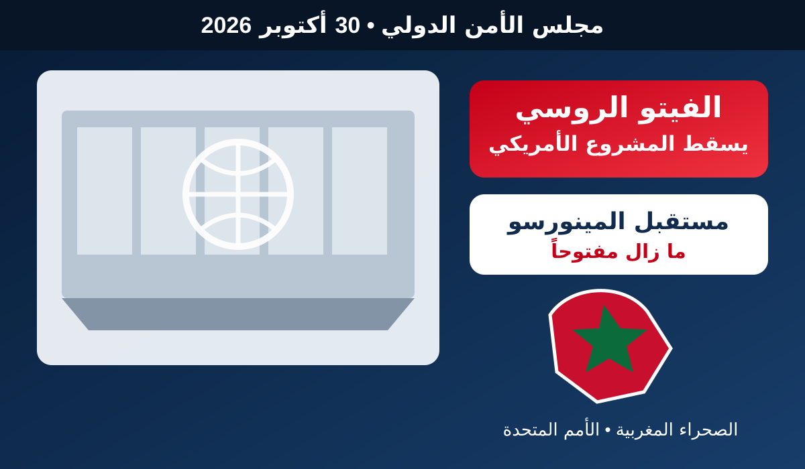

عاجل.. الفيتو الروسي يسقط مشروع القرار الأمريكي حول الصحراء ومصير المينورسو يبقى مفتوحاً

شهد مجلس الأمن الدولي، مساء الجمعة 30 أكتوبر 2026، تطوراً لافتاً في ملف الصحراء، بعدما فشل مشروع القرار الأمريكي بشأن بعثة الأمم المتحدة في الصحراء إثر استخدام روسيا حق النقض (الفيتو).
وبحسب التغطيات الدولية، حصل المشروع الأمريكي على 11 صوتاً مؤيداً، مقابل صوت واحد رافض وثلاثة امتناعات، لكن الفيتو الروسي حال دون اعتماده. وكان المشروع يتضمن تمديد مهمة البعثة لعام إضافي، مع تغيير اسمها ابتداء من فاتح نونبر، وإجراء مراجعة لهياكلها ومهامها، إلى جانب جعل مقترح الحكم الذاتي المغربي أساساً لمواصلة المفاوضات.
وبعد ذلك، طُرح مشروع روسي بديل يقترح تمديد ولاية المينورسو لمدة سنة دون إدخال التغييرات التي تضمنها المشروع الأمريكي. غير أن المشروع الروسي لم يحصل على العدد المطلوب من الأصوات، إذ صوتت لصالحه ثلاث دول فقط، فيما امتنعت 11 دولة وصوتت الولايات المتحدة ضده.
وبذلك، لم يعتمد مجلس الأمن، حتى هذه اللحظة، قراراً جديداً لتجديد ولاية المينورسو. وتنتهي الولاية الحالية في 31 أكتوبر 2026، ما يترك الباب مفتوحاً أمام اتصالات وتحركات دبلوماسية جديدة قبل انتهاء المدة.
ويأتي هذا التطور في سياق مفاوضات أممية تشهد نقاشاً حول مستقبل البعثة ودورها، في وقت يؤكد مشروع القرار الأمريكي الأخير أهمية مقترح الحكم الذاتي المغربي في العملية التفاوضية، بينما شددت مواقف أخرى داخل المجلس على ضرورة الحفاظ على مرجعية الأمم المتحدة ومبدأ تقرير المصير.
الخلاصة: ما حدث اليوم لا يعني إلغاء المينورسو بشكل نهائي، ولا يعني اعتماد مشروع روسي أو أمريكي. بل إن كلا المشروعين لم يدخل حيز التنفيذ، فيما يبقى مستقبل البعثة بحاجة إلى قرار أممي جديد أو تفاهم لاحق داخل مجلس الأمن.
← العودة إلى الصفحة الرئيسية